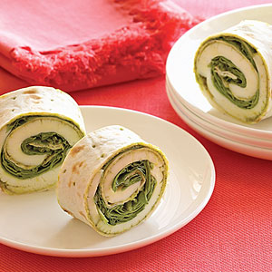
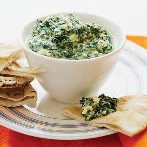
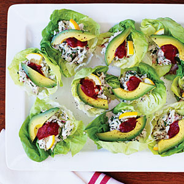
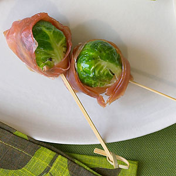
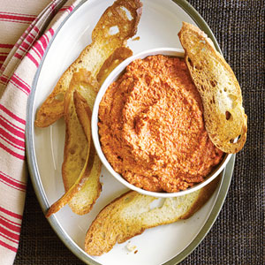

Here we have one of our quickest appetizers to make, Pesto Arugula Wraps. This dish is simply arugla and mozzarella cheese wrapped on lahvosh flatbreat that has been lightly coated with pesto, a simple dish that is perfect for those who want a tasty meal that doesn't take long to prepare.
Price: $25.99

This is one of our mst popular appetizers, our Greek Spinach Dip. This delectablle dish is made with fresh spinage, garlic, and lemon juce and zest. Lightly salted and mixed with olive oil, feta chese, fresh dill, black pepper, Greek yogurt, and chopped shallots; we offer our customers with a healthy choice of appetizer.
Price: $27.99

Don't let the name alarm you, no fish were harmed in the making of this dish. Our coustomers enjoy this due to its delicious flavor and less formal look. Mixed in red wine vinegar, hot sauce, and salad oil. This dish is meerly a mixture of minced garlic, pepper, black-eyed peas, corn, onions, cilantro, tomatos, and fr e sh a voca do. Just add some tortila chips and you are ready to eat.
Price: $35.99

There are two things everyone loves: great tasteing food and finger food. With delicious appetizer, we've combined both in our Crab Salad Cups. Topped with garden fresh crisp letus leaves, fr e sh a voca do, lemons, red onions, and parsley. The crab is first lightly coated with cocktail sauce and gently placed on top of a dollop of mayonase, lightly salted and pepered. This gourmet appetizer is perfect for a potluck or just a snack.
Price: $45.99

Don't let the Brussels Sprouts alarm you, our talented cheffs create our Brussels prout and Prosciutto Skewers with absolute care. Lightly salted, peppered, and coated with olive oil, and maple syrup. The sprouts are then wrpped with prosciutto and held together with our decorative skewers.
Price: $26.99

For those who like to spice things up a little. Our Walnut Red Pepper Dip is perfect for a party, potluck, or just a casual get together. Walnuts, cumin, sugar, and salt are combined with garlic, olive oil, and lemon juce in a food processor. Our cheffs carefully time the making of this dish to be sure that the dip has the proper texture before being served.
Price: $43.99